项目简介
- 基于 Java Swing 的经典坦克大战游戏，支持双人对战与AI对抗。
- 采用面向对象设计，结构清晰，易于扩展。
- 实现了丰富的游戏元素：玩家坦克、AI坦克、子弹、爆炸、道具、墙体、基地等。
游戏界面展示
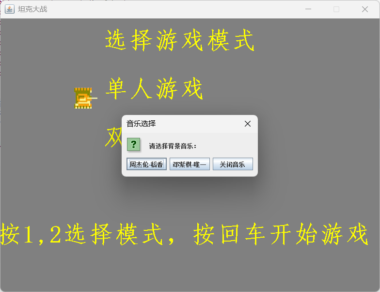
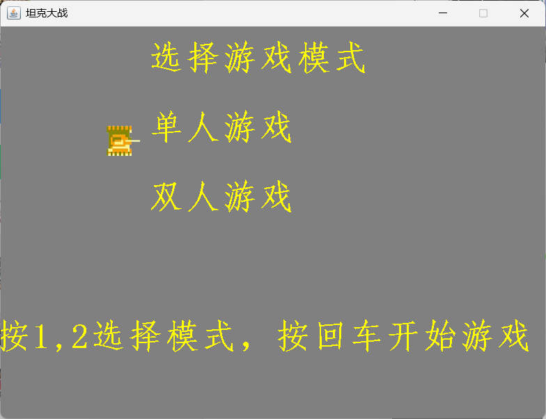
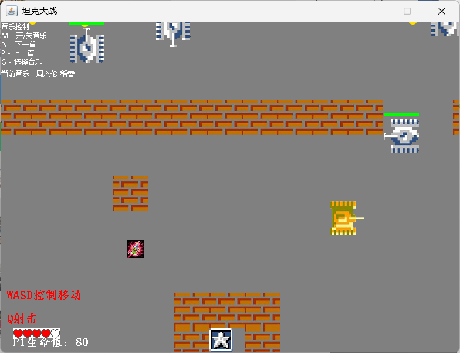
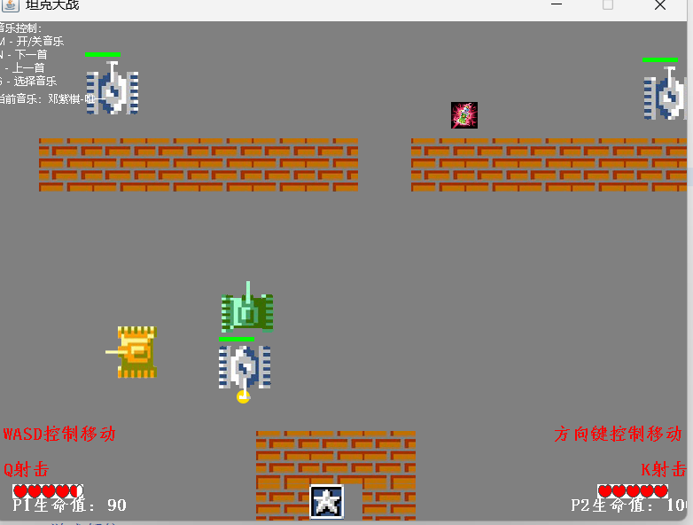
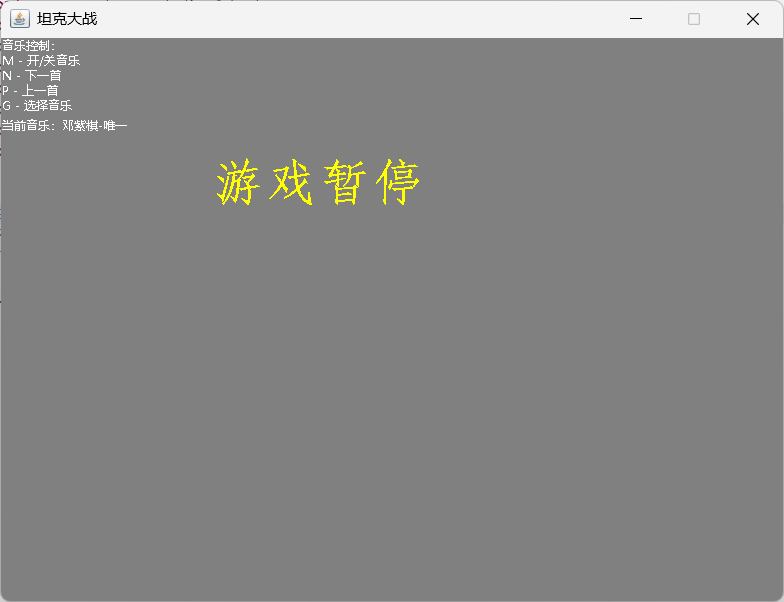
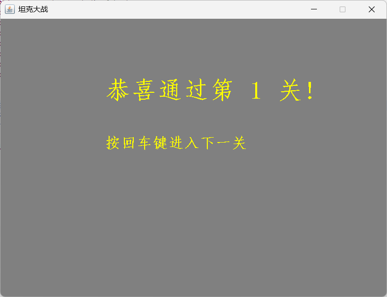
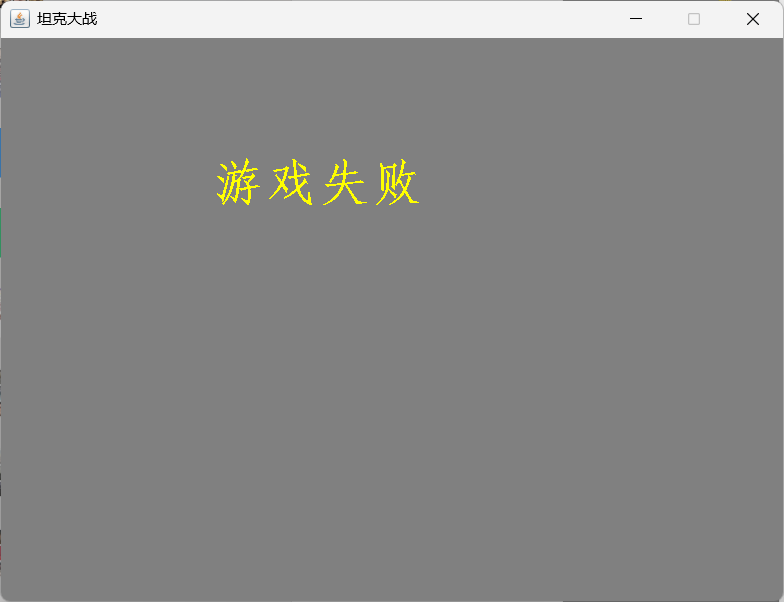
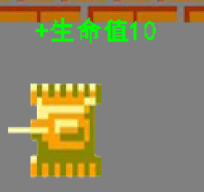
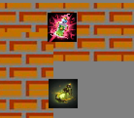
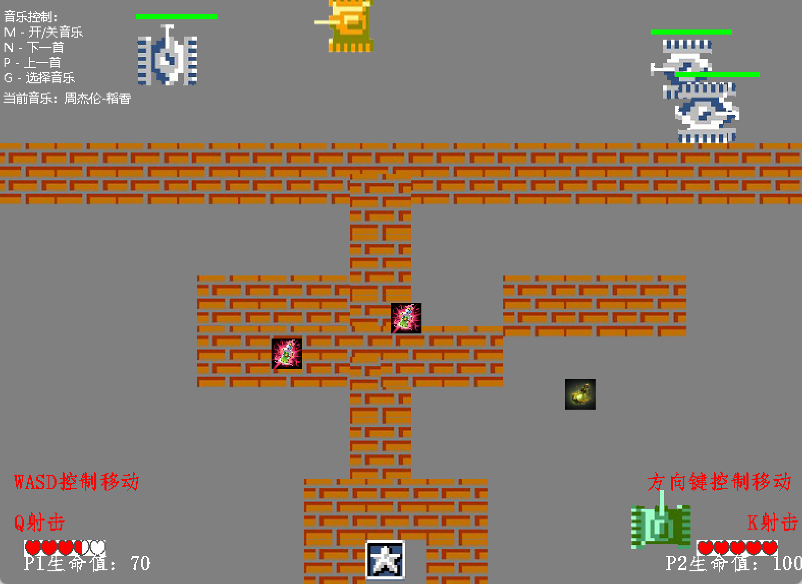
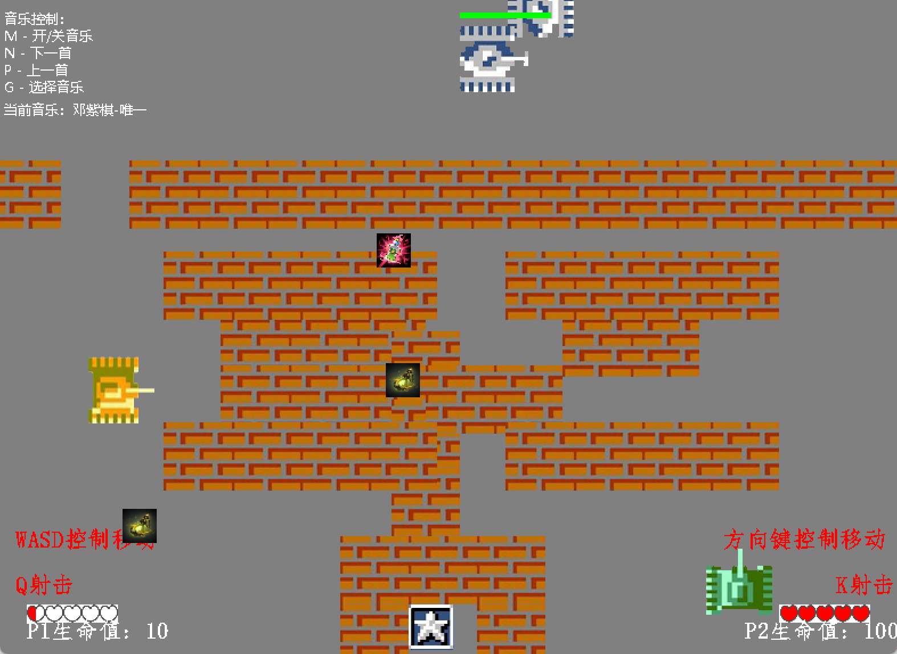
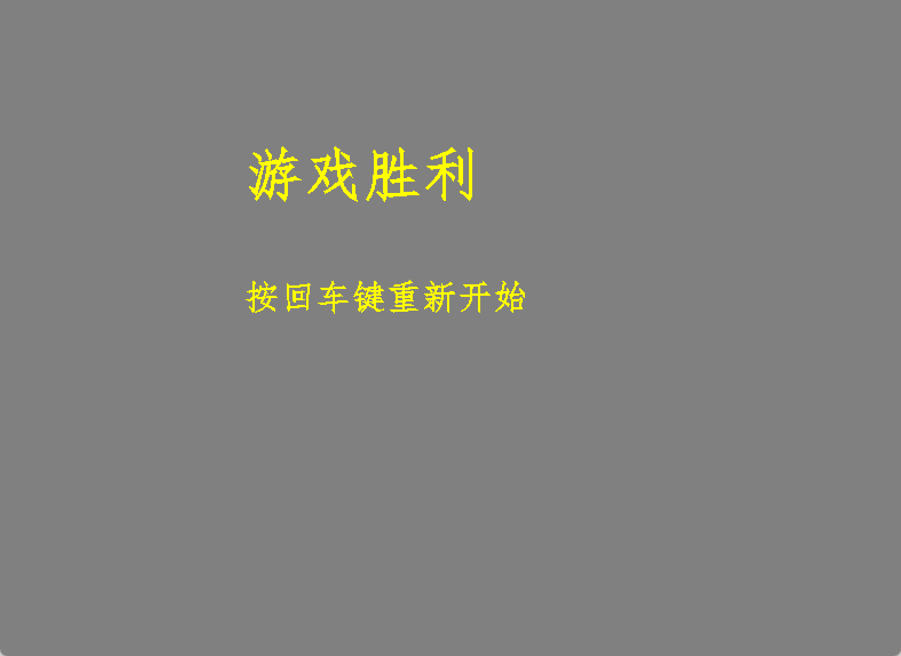
- 展示了游戏的主要界面和功能特性
- 包含开始菜单、游戏进行、道具效果、爆炸动画等场景
- 体现了游戏的视觉效果和用户交互体验
系统架构与类设计
图1说明：本类图展示了坦克大战项目的核心类结构与继承关系。
GameObject（抽象基类）是所有游戏对象（坦克、子弹、墙体、爆炸、道具等）的父类，封装了位置、尺寸、图片、方向、速度等通用属性和方法。
主要子类：Tank、Bullet、Wall、BlastObj、PowerUp。
Tank（坦克基类）：继承自GameObject，封装了坦克的移动、攻击、碰撞检测、冷却等核心逻辑。子类有PlayerOne、PlayerTwo（玩家坦克）、Bot（AI敌人坦克），体现了继承和多态，便于扩展不同类型的坦克。
Bullet（子弹基类）：继承自GameObject，实现子弹的移动、碰撞检测。子类有EnemyBullet（敌方子弹，重写碰撞检测方法）。
Wall、PowerUp、BlastObj：都继承自GameObject，分别实现各自的显示、碰撞和交互逻辑。
GamePanel：继承自JFrame，负责游戏主循环、对象管理、事件处理、界面绘制，持有所有游戏对象的集合（如tankList、botList、bulletList等），统一调度和管理。
类图关系描述：GamePanel聚合/组合了大量GameObject的子类对象。Tank与Bullet、Wall、PowerUp等通过方法和事件发生交互，体现了面向对象的继承、封装、多态和组合思想。
GameObject（抽象基类）是所有游戏对象（坦克、子弹、墙体、爆炸、道具等）的父类，封装了位置、尺寸、图片、方向、速度等通用属性和方法。
主要子类：Tank、Bullet、Wall、BlastObj、PowerUp。
Tank（坦克基类）：继承自GameObject，封装了坦克的移动、攻击、碰撞检测、冷却等核心逻辑。子类有PlayerOne、PlayerTwo（玩家坦克）、Bot（AI敌人坦克），体现了继承和多态，便于扩展不同类型的坦克。
Bullet（子弹基类）：继承自GameObject，实现子弹的移动、碰撞检测。子类有EnemyBullet（敌方子弹，重写碰撞检测方法）。
Wall、PowerUp、BlastObj：都继承自GameObject，分别实现各自的显示、碰撞和交互逻辑。
GamePanel：继承自JFrame，负责游戏主循环、对象管理、事件处理、界面绘制，持有所有游戏对象的集合（如tankList、botList、bulletList等），统一调度和管理。
类图关系描述：GamePanel聚合/组合了大量GameObject的子类对象。Tank与Bullet、Wall、PowerUp等通过方法和事件发生交互，体现了面向对象的继承、封装、多态和组合思想。
- GamePanel：游戏主控制器，管理所有对象与主循环。
- GameObject：抽象基类，定义通用属性与方法。
- Tank（抽象）：坦克基类，派生出玩家与AI坦克。
- Bullet/EnemyBullet：子弹类，分别对应玩家和AI。
- PowerUp：道具类，提供加速、回血等效果。
- Wall/Base/BlastObj：障碍、基地与爆炸动画对象。
主流程与对象交互
图2说明：主流程图清晰展示了游戏主循环的各个阶段，包括初始化、用户输入、AI决策、对象状态更新、碰撞检测、对象生成与销毁等，体现了事件驱动与状态管理。
主要流程说明：
1. 初始化游戏对象（玩家、敌人、墙体、道具等）
2. 进入主循环：
- 处理用户输入（键盘事件控制玩家坦克）
- 更新所有对象状态（如坦克移动、子弹飞行、AI敌人行为）
- 检测碰撞（坦克与墙体、子弹与坦克/墙体/基地/道具等）
- 处理对象销毁与生成（如爆炸、道具刷新）
- 绘制所有对象到屏幕
- 判断游戏胜负状态
主要流程说明：
1. 初始化游戏对象（玩家、敌人、墙体、道具等）
2. 进入主循环：
- 处理用户输入（键盘事件控制玩家坦克）
- 更新所有对象状态（如坦克移动、子弹飞行、AI敌人行为）
- 检测碰撞（坦克与墙体、子弹与坦克/墙体/基地/道具等）
- 处理对象销毁与生成（如爆炸、道具刷新）
- 绘制所有对象到屏幕
- 判断游戏胜负状态
- 主循环驱动游戏状态更新与渲染。
- 玩家输入、AI决策、碰撞检测、对象生成与销毁等核心逻辑。
子弹与道具处理流程
图3说明：子弹处理流程图详细描述了坦克攻击与子弹碰撞的完整过程。
流程说明：
1. 玩家/AI触发攻击，生成Bullet/EnemyBullet对象
2. 子弹移动，实时检测与其他对象的碰撞
3. 碰撞后触发爆炸、伤害结算、对象移除等逻辑
流程说明：
1. 玩家/AI触发攻击，生成Bullet/EnemyBullet对象
2. 子弹移动，实时检测与其他对象的碰撞
3. 碰撞后触发爆炸、伤害结算、对象移除等逻辑
图4说明：道具拾取流程图展示了玩家坦克与PowerUp对象发生碰撞后的处理过程。
流程说明：
1. 玩家坦克与PowerUp对象发生碰撞
2. 判断道具类型，赋予玩家相应增益（如加速、回血）
3. 移除已拾取道具对象
流程说明：
1. 玩家坦克与PowerUp对象发生碰撞
2. 判断道具类型，赋予玩家相应增益（如加速、回血）
3. 移除已拾取道具对象
- 子弹生成、碰撞检测、爆炸动画与对象回收。
- 道具生成、拾取判定、效果应用与时效管理。
关键技术难点与解决思路
- 碰撞检测： 采用矩形边界检测算法，实时判断坦克、子弹、墙体、道具等对象间的碰撞，确保游戏逻辑准确且高效。每帧遍历所有活动对象，利用坐标与尺寸判断是否重叠，触发相应的碰撞响应（如伤害、销毁、拾取等）。
- 动画渲染： 通过双缓冲技术减少闪烁，所有绘制操作先在内存画布完成，再统一输出到屏幕。利用定时器驱动爆炸、移动等动画帧切换，实现流畅的视觉效果。
- 面向对象设计： 核心实体如Tank、Bullet、Wall、PowerUp等均抽象为独立类，利用继承与多态简化扩展和维护。各类对象通过统一接口进行管理，便于后续功能拓展。
- 关卡与难度提升： 实现了多关卡切换机制，每一关的地图布局、敌人数量和AI策略均可配置。难度提升体现在敌方坦克速度、攻击频率、道具刷新率等参数的动态调整，提升玩家挑战性和游戏可玩性。关卡数据可通过配置文件或代码结构灵活扩展。
关键代码展示与面向对象设计
GameObject 抽象基类：
public abstract class GameObject {
protected double x, y;
protected int width, height;
protected Image image;
public abstract void move();
public abstract void draw(Graphics g);
public abstract boolean isCollide(GameObject obj);
}
Tank 类与多态：
public abstract class Tank extends GameObject {
protected int health, attack, cooldown;
public Bullet fire() { /* ... */ }
public void takeDamage(int damage) { /* ... */ }
}
GamePanel 管理与主循环：
public class GamePanel extends JPanel {
private List<Tank> playerTanks;
private List<Bot> botList;
private List<Bullet> bulletList;
// ...
public void gameLoop() {
while (running) {
updateObjects();
checkCollisions();
repaint();
}
}
}
AI决策逻辑（Bot类）：
public class Bot extends Tank {
private int moveTime = 0;
private int directionChangeRate;
public void move() {
moveTime++;
if (moveTime > directionChangeRate) {
changeDirectionRandomly();
moveTime = 0;
}
if (canFire()) {
fire();
}
// 具体移动逻辑
super.move();
}
private void changeDirectionRandomly() {
// 随机切换方向实现
}
private boolean canFire() {
// 判断是否可以发射子弹
return true;
}
private void fire() {
EnemyBullet bullet = new EnemyBullet(\"images/bullet/bulletYellow.gif\", x, y, direction, this.gamePanel);
this.gamePanel.bulletList.add(bullet);
}
}
关卡与地图管理（GamePanel类）：
public class GamePanel extends JFrame {
private int currentLevel = 1;
private final int MAX_LEVEL = 5;
private List botList = new ArrayList<>();
private void initLevel() {
botList.clear();
// 初始化墙体、敌人、道具等
addLevelWalls();
// 设置关卡参数
int totalEnemies = 3 + (currentLevel - 1) * 2;
// ... 其他关卡参数设置
}
private void addLevelWalls() {
switch (currentLevel) {
case 1:
// 第一关墙体布局
break;
case 2:
// 第二关墙体布局
break;
// ...
}
}
private void nextLevel() {
if (currentLevel < MAX_LEVEL) {
currentLevel++;
initLevel();
}
}
}
爆炸与动画处理（BlastObj类）：
public class BlastObj extends GameObject {
private static Image[] imgs = new Image[8];
private int explodeCount = 0;
public void paintSelf(Graphics g) {
if (explodeCount < imgs.length) {
g.drawImage(imgs[explodeCount], x, y, null);
explodeCount++;
} else {
this.gamePanel.blastList.remove(this);
}
}
}
碰撞检测与响应：
public boolean hitTank(int x, int y) {
Rectangle r1 = new Rectangle(x, y, width, height);
for (Tank tank : tanks) {
if (tank != this && tank.alive && r1.intersects(tank.getRec())) {
return true;
}
}
return false;
}
// 响应示例
if (bullet.getRec().intersects(tank.getRec())) {
tank.takeDamage(bullet.getDamage());
gamePanel.bulletList.remove(bullet);
}
- 充分体现继承、多态、封装等OOP思想，所有游戏对象均继承自 GameObject，实现统一接口。
- 主控制器 GamePanel 负责对象管理与主循环，体现 MVC 控制思想。
- 建议引入 对象池 优化对象创建，提升解耦与扩展性。
项目亮点与总结
- 结构清晰，易于维护和扩展。
- 丰富的游戏元素与交互体验。
- 可作为面向对象设计与Java实践的案例学习,巩固知识。